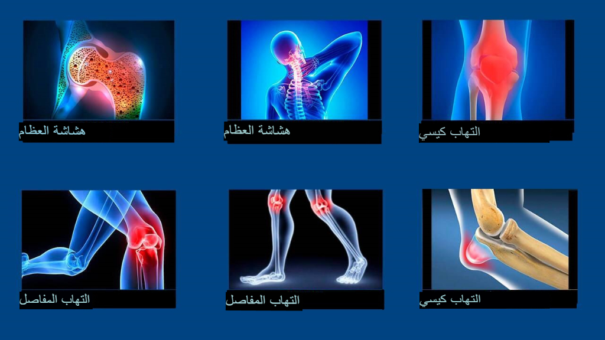
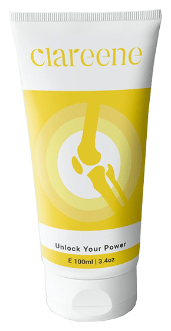

أخبار الصحة
"الأساليب الجزائر لعلاج المفاصل تسبب الصدمة ليس إلا". مقابلة رائعة مع طبيب الروماتيزم الروسية الشهير الدكتور ريابوف كونستانتين؛ مدير مركز برلين الشهير لأمراض الروماتيزم والأعصاب هناك سبب واحد فقط لأمراض المفاصل، ولكن الأطباء الالجزائريين يتجاهلونه تمامًا.
date
الدكتور ريابوف كونستانتين: "في دولة الجزائر، لا تزال أمراض المفاصل تُعالج بأدوية غير فعالة عفا عليها الزمن، والتي واجب تناولها بشكل مستمر على مدى الحياة. بينما في روسيا، تعالج أمراض المفاصل بشكل بسيط خلال أسبوع وكأنها الزكام".
في العام الجاري، زار ريابوف كونستانتين دولة الجزائر لدراسة تجربة زملائه الالجزائريين. وما شاهده في دولة الجزائر، حسب كلامه، تعجز الكلمات عن وصفه. في بلدنا، وفقا لريابوف، أساليب معالجة الروماتيزم تعود لمنتصف القرن الماضي.

السيد توماس، شكرا لموافقتك على المقابلة! لقد قلت مؤخرًا إن ما رأيته في الجزائر صدمك. هل يمكنك التعليق على هذا؟
أريد أن أقول على الفور أن نظرتي جيدة تجاه دولة الجزائر، وتجاه الثقافة الجزائر
الالجزائريين
نفسهم. لكن حالة الطب لديكم تصدم الأطباء الألمان. مجال الطب عندكم متأخر على الأقل بـ 30 سنة، وربما ال40 حتى.
على
أي حال، بالنسبة لعلاج أمراض المفاصل والجهاز العضلي الهيكلي. يمكننا القول، إن مثل علم الروماتيزم في دولة
الجزائر
غير موجود أصلًا.
ما يقترحه أطباؤكم لعلاج المفاصل فقط يخفف من أعراض المرض؛ الألم والالتهاب والوذمة. تخيل
ما يحدث على مستوى الكائن الحي. عندما يأخذ الشخص هذه الأدوية، يزول الألم. ولكن بمجرد توقف العلاج عن العمل، يعود
الألم على الفور. والألم إشارة مهمة لأنه يشير إلى حدوث عملية مدمرة في المفصل. تناول مسكنات الألم بانتظام لن
يشفي
مفاصلك. يتم تسريع عملية التدمير من 5 إلى 7 مرات وتؤدي في النهاية إلى تغييرات لا رجعة فيها
وإعاقة.
الأطباء
والصيادلة لديكم يشوهون الناس ليس إلا! من الواضح أن عمليات البيع المستمرة والأسعار الباهظة للمستحضرات التي من
شأنها أن تقضي على الأعراض فحسب أمر مربح على نقيض علاج المرض لمرة واحدة وإلى الأبد، وعلاج المفصل التالف، ولكن
هذا
ليس عدلاً ولا صحيحًا!
ماذا عن علاج المفاصل في ألمانيا؟
في ألمانيا نادرًا ما يتم استخدام مسكنات الألم فقط في الحالات القصوى بحذر شديد. لقد أدرك
جميع الأطباء الألمان منذ فترة طويلة أنه من الضروري القضاء ليس فقط على آلام المفاصل، ولكن على وجه التحديد أسباب
هذا الألم. هذا هو مفتاح العلاج السهل والسريع. ما هو السبب الرئيسي لتلف المفاصل؟ هذا هو ترسب الأملاح بسبب
اضطرابات الدورة الدموية في المفاصل والعمود الفقري.
على سبيل المثال اليورات هي عبارة عن أملاح حمض
اليوريك
وتسبب النقرس. والنباتات العظمية هي الأملاح المتكلسة وهي سبب ل 96% من أمراض المفاصل والعمود
الفقري الأخرى. جميع أنواع التهاب المفاصل والتهاب المفاصل، وتنخر العظم، وهشاشة العظام، والروماتيزم، وأي فتق. كل
هذه الأمراض لها سبب واحد: رواسب النباتات العظمية.
تبدأ الأملاح، المترسبة على أسطح المفاصل في تدمير
الأنسجة: العظام والغضاريف. في مرحلة النمو، تبدأ بلورات الملح في إصابة الأنسجة العضلية والأوتار والأوعية
الدموية
والشعيرات الدموية، مما يتسبب في حدوث التهاب كبير ووذمة وألم شديد.
من أجل إزالة الأملاح المتراكمة على مر
السنين من المفاصل المريضة، يستعيد الأطباء الألمان أولاً الدورة الدموية في المفاصل. وهذا بدوره يعيد الدورة
الدموية الطبيعية للسائل الزليلي ويبدأ عملية علاج نسيج المفصل. مفاصل الإنسان متجددة للغاية، فهي قادرة على
التعافي
بسرعة مثل ذيل السحلية. تحتاج فقط إلى مساعدتهم قليلاً في هذا من أجل تحريرهم من الأملاح "الملتصقة" بهم
وستستمر العملية من تلقاء نفسها.
مفاصل الإنسان متجددة للغاية، ويعرفون بشكل مستقل كيفية التعافي، مثل ذيل
السحلية. تحتاج فقط إلى مساعدتهم قليلاً في هذا من أجل تحريرهم من الأملاح "الملتصقة" بهم وستستمر
العملية
من تلقاء نفسها.
في عام 1995، تمكن العلماء السويسريون من الحصول على شكل خاص من شبه فيتامين B، ما يسمى
ألفا-أرثروفيرول. يتم الحصول عليه عن طريق تصنيع المكونات الطبيعية: مستخلص قرون مارال، سم الأفعى، شحم سمك القرش
بالإضافة إلى مجموعة من أكثر من 50 مستخلصًا مختلفًا. مستخرج قرون مارال هي المادة التي تضمن النمو النشط لقرون
الحيوان. أي أن مهمتها الرئيسية هي إنشاء نسيج عظمي جديد. هل يمكنك تخيل القوة البيولوجية لمثل هذه الآلية؟ لا
يوجد
شيء أكثر فعالية في الطبيعة لتنشيط الدورة الدموية في العظام والمفاصل.
هذه المادة قادرة على اختراق جزيئات
الملح وكسرها من الداخل - ونتيجة لذلك، يتم تنظيف أسطح المفاصل، واستعادة تدفق الدم وتدوير السائل الزليلي. إلى
أبد
الآبدين! أو بالأحرى، حتى يتراكم الملح مرة أخرى (لكن هذا سيستغرق عدة عقود). لم تعد بحاجة إلى استخدام الأدوية
بشكل
مستمر لتخفيف الألم والالتهاب. يتعافى الناس على أكمل الوجه!
لقد صدمت عندما رأيت الإحصائيات الطبية
الالجزائريين. هل تعلم ما هو السبب الأكثر شيوعًا للإعاقة في الجزائر؟ هو التهاب المفاصل! أبسط حالات التهاب
المفاصل،
التي تعالج في ألمانيا في غضون أسبوعين بعقار رخيص، هي نفسها تؤدي إلى الإعاقة في الجزائر!
تعتبر أمراض
المفاصل في الجزائر اليوم أمراضًا خفيفة. يشير الألم والالتهاب في المفاصل فقط إلى أنها "ملوثة"
بالأملاح
وقد حان الوقت لتنظيفها. بعد دورة "التنظيف" على مدى شهر، تعود المفاصل إلى وضعها الطبيعي ويمكن نسيان
المشاكل للسنوات العشرة القادمة.
أمراض المفاصل، التي يحاول أخصائيون عراقيون "علاجها" بشكل
منفصل، في ألمانيا دمجت منذ فترة طويلة في مرض واحد تحت مسمى "Articulatio de sales" (التكوينات الملحية
للمفاصل). يشمل هذا المرض: النقرس، التهاب المفاصل، التهاب المفاصل، الداء العظمي الغضروفي، الروماتيزم، الفتق،
التهاب الغشاء المفصلي إلخ.

وكل هذه الامراض تعالج بكل بساطة.. عن طريق تنظيف المفاصل.
طريقة آمنة وسريعة
تمامًا، ولا يتطلب حتى رعاية طبية ويتم إجراؤه في المنزل.
كيف يتم "تنظيف" المفاصل في ألمانيا؟
اليوم هناك مستحضرات خاصة مصنعة لتطهير المفاصل من رواسب الملح. تحتوي على مادة
ألفا-أرتروفيرول. على سبيل المثال، أحد أفضل المنتجات المحتوية عليها هو Clareene Plus. يحتوي هذا الدواء على مادة
ألفا-أرتروفيرول في شكل خاص سهل الامتصاص، مما يؤدي إلى زيادة فعاليته.
من المزايا المهمة لـ Clareene Plus
أنه
يحتوي على مجموعة متكاملة من الفيتامينات المفصلية الجهازية، والعناصر الكلية والصغرى المصممة لتحسين أداء أنسجة
المفاصل. أي أن لها تأثير شفاء شامل على أنسجة العظام والغضاريف، والسائل الزليلي، وألياف العضلات، وعلى أنسجة
الأربطة والأوتار. الطيف الكامل المحتمل للتأثيرات المعقدة هو مسحوق رائع. يحتوي على أكثر من 50 مكونًا طبيعيًا.
يعيد الدورة الدموية في المفاصل بسهولة وسرعة.
Clareene Plus، على حد علمنا، لا يباع في الصيدليات الالجزائريين، أليس كذلك؟
حقيقة الأمر، كلا. يفضل الأطباء الالجزائريين "إطعام" المرضى بالمسكنات عديمة
الفائدة بدلا من علاجهم حسب الأصول.
في الوقت نفسه، ليس هناك شك في أن أطباء الروماتيزم الالجزائريين، على
الأقل أولئك الذين يهتمون بأساليب العلاج التقدمية، يعلمون عن Clareene Plus وقدراته المتقدمة. لكنهم لا يخاطرون
بوصف
دواء غير مدرج في قائمة وزارة الصحة.
على حد علمي، أرادت الشركة المصنعة Clareene Plus دخول سوق الجزائر.
لكن لم
يُسمح لها بذلك. فبعد أن خلقت مئات العقبات (البيروقراطية في الجزائر لا يمكن محوها). هذا أمر مفهوم.. فإذا ظهر
هذا
الدواء في الصيدليات، فإن الصيادلة الالجزائريين سيتكبدون خسائر فادحة. بعد كل شيء، علم العقاقير اليوم هو عمل
تجاري!
ما هي نصيحتكم للأشخاص الذين يعانون من آلام المفاصل والمقيمين في الجزائر؟
للأشخاص العاديون، وخاصة الأشخاص الذين تزيد أعمارهم عن 40 عامًا، لأنهم أكثر عرضة
للإصابة وضحايا التخلف الطبي الالجزائريين. الخطأ ليس خطأهم، إنها الطريقة التي يعمل بها نظام الرعاية الصحية لا
غير.
لكن لحسن الحظ، هناك حل. لقد اتفقنا مع المركز الالجزائريين لأمراض الروماتيزم حول إمكانية بيع هذا
الدواء لجميع سكان الجزائر الذين يعانون من مشاكل في المفاصل. تم إنشاء موقع ويب رسمي خاص، يمكن من خلاله لأي
مقيم
في الالجزائريين طلب Clareene Plus بسعر زهيد للغاية!
بالفعل عدة آلاف المقيمين في الجزائر قد طلبوا
وتلقوا
Clareene Plus. طلبنا منهم تقييم مدى نجاح الدواء في مساعدتهم من 1 إلى 10. حتى الآن شارك أكثر من 5000 شخص في
الاستطلاع ومتوسط تقييم الدواء هو 9.95 من أصل 10.
ما هي مدة التوزيع التفضيلي لهذا الدواء
المذهل؟
حتى تنتهي الدفعة المخصصة. لكني أريد أن أخبركم الان أنه لم يتبقى سوى القليل منه. الطلب عليه
يتزايد ويتزايد. الناس يتداولون الاحاديث بشأنه إلى بعضهم البعض وينصحون أصدقاءهم ويطلبونه لأقاربهم. حتى أننا
لم
نتوقع أن تنتشر المعلومات حول Clareene Plus بهذه السرعة في جميع أنحاء الجزائر.
لغاية ما ينتهي Clareene
Plus،
أوصي بأن يتقدم جميع الأشخاص الذين يعانون من مشاكل المفاصل للحصول على معاملة Clareene Plus التفضيلية على
الموقع
الإلكتروني. وتذكروا دائمًا أن صحتنا هي أهم شيء لدينا وأكثرها قيمة.

أسرع واطلب قبل أن يتم تمرير الخصم إلى القارئ التالي، عرضك لمرة واحدة سينتهي قريبًا:
7999 DZD
تعليقات وآراء
شكرا لكم، المقال مفيد جدا! لفد قمت بطلب Clareene Plus. قال المستشار أن الدواء
لازال
متوفرا، لكنه ينتهي بسرعة. من الجبد أنني قرأت هذا المقال وعرفت بشأن الدواء.
أنا واحد من أولئك الذين تمكنوا بالفعل من تجربة الدواء Clareene Plus. إنه حقًا
الأفضل.
أنا أعاني من مرض التهاب المفاصل منذ فترة طويلة للغاية، هذا المرض يعذبني منذ 7 سنوات. وقد تقبلت فكرة
تناول
حبوب وحقن حتى نهاية حياتي، ولكن في نهاية المطاف، بعد إتمام الدورة العلاجية مع اادواء Clareene Plus،
الألم
اختفى. اختفى تمامًا. أوصي الجميع بهذا الدواء إنه حقاً سيساعدكم!
عمري 63 عاما. تؤلمني الركبتين منذ 53 عاما. وفي الآونة الأخيرة، بات الألم لا يطاق
تمامًا. راجعت طبيبي (صديق الطفولة) وهو أخبرني عن هذه الدورة ووصفني هذا الدواء قبل 3 أشهر.
الآن
أقفز مثل الكنغر... الدواء نار!
طلبت الدواء. أبلغوني أنه في غضون 5 أيام يمكنني استلامه عبر البريد. أتمنى من
استلامه
في الوقت المحدد.
أجل، الموت في بلدنا أسهل ما يمكن. عمري 59 سنة. لقد مات بالفعل ثلثي الأقران ممن
أعرفهم، والباقي بالكاد يتحرك بسبب الألم اللامتناهي في الساقين والذراعين والظهر... الخبر هذا جدير
بالتفكير
به
في رأيي، الهدف الرئيسي لدى الأطباء هو سرقة الأموال منا قدر الإمكان ولا يهتمون
لأي
شيء آخر بتاتًا. أخضع كل نصف سنة لجودة العلاج بالحقن. وهذا العام، في الخريف، وصفوا لي عدد لا يفسر من
الحقن
أخشيت من تناولها. والطبيبة لم تسألني حتى عن الأمراض الأخرى التي أعاني منها وكيف ستؤثر تلك
الأدوية
على جسمي. اللامبالاة ووصف أدوية معينة يتلقون نسبة منها من الشركات. ربما في أماكن أخرى الأمور لا تجري
على
هذا السيناريو، ولكنني غير متأكدة. هذا هو حال الطب لدينا. أما بخصوص الدواء الألماني بشروط ميسرة، فهو
خبر
سار بالتأكيد!
لدي أيضا خبرة في العلاج بالدواء Clareene Plus وخبرتي كذلك إيجابية. كنت أتعاطى
مسكنات
الألم بالحقن باستمرار، ولكن بعد Clareene Plus أشعر وكأنني عصفورة تحلق السماء!
الدواء جيد حقا. تعالجت به في الصيف الماضي (أحضره ابني من برلين). وقد تخلصت من
مرض
النقرس بفضله! وحتى الآن لا أعراض المرض ادي. أنا مندهش حقا. أشعر بالارتياح. أوصي الجميع بهذا
الدواء.
بينما كنت أقرأ في منتديات التعليقات عن Clareene Plus الدواء تقريبًا انتهى! الحمد
لله
تمكنت من طلبه. وشروط ميسرة أوي.
علمت بشأن Clareene Plus من أحد المنتديات للمعانين من آلام المفاصل. والكثير من
التعليقات كانت إيجابية بشأنه. قررت أن أطلبه أنا أيضًا. بتُّ أستخدمه لـ 3 أيام فقط، وبدأت ألاحظ تحسينات
في
كل شيء. زال الألم تمامًا، وصوت الطقطقة خف بشكل ملحوظ، ولا تزال هناك وذمة صغيرة، لكنها أفضل بكثير مما
كانت
عليه. عموما سأفيدكم بين الحين والآخر ولكني راضي تماما بالبداية
أعجبني أيضا هذا الدواء. في البداية كنت أتناول ايتودولاك، ثم ميلوكسيماك و
كيتورول.
ولكن فجأة توقف مفعول تلك الأدوية. بعدها راجعت الطبيب، وأوثاني بتجربة دواء Clareene Plus الجديد (الطبيب
كان
شابًا، قد يكون ما تزال نواياه طيبة غير متيخة بفكرة جني المال من المرضى!). ساعدني Clareene Plus من
المرة
الأولى: زال الألم على الفور تقريبًا، لكنني بدأت في تناوله في شكل دورة علاجية، كما نصحني الطبيب. بعد 3
أسابيع، نسيت كلمة الألم على الإطلاق. أشعر يشكل رائع، وكأنني عدت شابة!
شكرا. طلبت الدواء لي ولزوجي. سألت المستشار متى سيتوافر الدواء في الصيدليات. -
قال
إنه لا يعلم. وقد تكون هذه الطريقة الوحيدة لتجربة هذا الدواء
شكرا
أسرع واطلب قبل أن يصل الخصم إلى القارئ التالي، عرضك لمرة واحدة سينتهي قريبًا:
7999 DZD